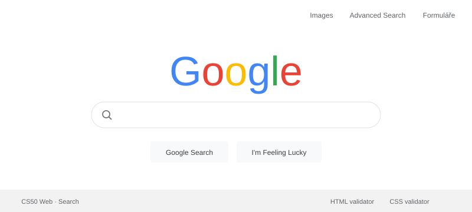

MŮJ KOUSEK INTERNETU
Čau,
jsem Vojta.
Baví mě počítače, hry a zjišťovat, jak věci fungují. Teď se učím dělat weby. Tohle je jeden z nich.
Pořád se učím. A právě to mě na tom baví.
01 / CO JSEM ZKUSIL
Moje malé projekty.
Žádná velká věda.
Jen věci, na kterých se učím.

KLIKNI A VYZKOUŠEJ ↗01 / VYHLEDÁVÁNÍ
Google Search
Můj pokus o známý vyhledávač. Včetně obrázků, rozšířeného hledání a ukázky formulářů.
02 / PRVNÍ POKUS
Moje první stránka
Tady to začalo. HTML, CSS a spousta zkoušení.
03 / NĚCO OSOBNÍHO
About me
Pár slov o mně a o tom, co mě baví.
04 / JEDNOSTRÁNKOVÝ WEB
OneSinglePage
VOJTA MOTORS — jednostránkový web fiktivního autosalonu. Školní projekt v HTML a CSS.
02 / ZA TÍM WEBEM
Prostě kluk,
kterého baví IT.
Jsem Vojta, student, který rád hraje hry a zkoumá, jak fungují počítače. Když mě něco zaujme, chci si to vyzkoušet sám.
Teď objevuju HTML a CSS, trochu JavaScriptu a zajímá mě i cybersecurity. Občas se něco rozbije. Pak hledám proč. I to k tomu patří.
PRÁVĚ OTEVŘENÉ ZÁLOŽKY
Co se teď učím
- zkouším
HTML & CSS
Od první značky po vlastní vzhled.
- začínám
JavaScript
Aby se na stránce i něco dělo.
- baví mě
Počítače & technologie
Každý den něco nového.
- objevuju
Cybersecurity
Jak zůstat v bezpečí na internetu.
Nemusím umět všechno. Stačí mít chuť začít.